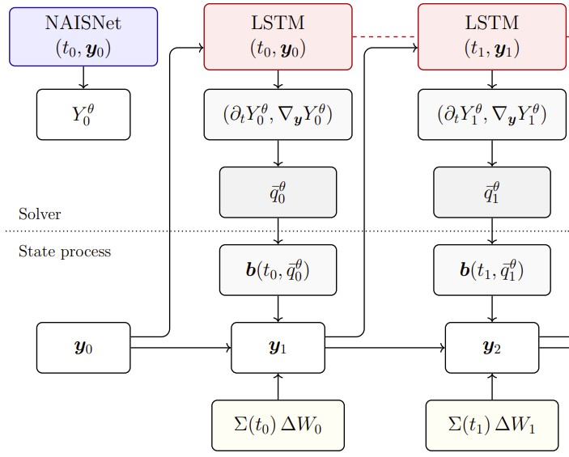

Deep Stochastic Control for Optimal Trade Execution in Intraday Electricity Markets
MSc thesis, NTNU, July 2025 (grade A) · with Alexander Dybdahl and Syver Nes · supervised by Ståle Størdal, Jacob Laading and Sjur Westgaard · an extension of this work is under double-blind review at Management Science
A producer selling into the continuous intraday electricity market must unwind a position whose very size is uncertain: renewable forecasts keep revising the volume that will actually be delivered. We formulate this as a finite-horizon stochastic control problem, an Almgren–Chriss execution model extended with renewable forecast uncertainty, permanent and temporary price impact, and a bid–ask spread. The frictions put the problem out of reach of classical solvers, so we built a deep learning method for it, with neural networks as the numerical scheme. The thesis was completed during my internship on Statkraft's UK intraday power trading desk.
Why the standard tools break
The spread makes the Hamiltonian non-smooth: buying and selling face different prices, so the value function's gradient enters through a kinked term, and classical verification arguments and smooth PDE solvers degrade. The dynamic programming equation is a semilinear HJB equation
$$ \partial_t V + \sup_{u}\,\Big\{ \mathcal{L}^{u} V + f(x, u) \Big\} = 0, \qquad V(T,\cdot) = g, $$
which we recast as a forward–backward SDE following the deep BSDE method of Han, Jentzen and E, and approximate with neural networks trained on simulated paths of the market state.
Architecture and loss design
The main design choices:
- Network architecture. The value process is a hybrid NAIS-Net–LSTM: a non-autonomous input-output stable residual network embeds the market state at each time step, and an LSTM carries the value process across time, matching the sequential structure of the BSDE. The codebase supports a family of alternatives (fully connected, ResNet and NAIS-Net subnets, combined with plain, residual and NAIS-type LSTM backbones), and the hybrid is the configuration we settled on after experimenting across that family.
- Physics-informed composite loss. The feedback control at each state is obtained by minimising the Hamiltonian directly rather than by differentiating a fitted value surface, and training combines a BSDE-consistency term along paths, a terminal condition term, the control objective itself, and a PINN-style penalty on the HJB residual:
$$ \mathcal{J} \;=\; \lambda_{\text{BSDE}}\,\mathbb{E}\!\left[ \big| Y_T - g(X_T) \big|^2 \right] \;+\; \lambda_{\text{cost}}\, \mathbb{E}\!\left[ \textstyle\int_0^T f(X_t, u_t)\,dt \right] \;+\; \lambda_{\text{HJB}}\, \big\| \text{HJB residual} \big\|^2 . $$
The HJB residual acts as a regulariser that keeps the learned value function consistent with the dynamic programming principle away from the sampled paths; this is what lets the method stay stable where the Hamiltonian is kinked.
Training at scale
There is no fixed dataset: every batch is 16,384 market-state paths simulated on the fly, so the data pipeline is part of the solver. Training ran on NTNU's Idun HPC cluster under Slurm, distributed across four NVIDIA H100 GPUs with PyTorch DistributedDataParallel launched via torchrun, with per-rank path simulation, explicit GPU memory management in the training loop, learning-rate scheduling, and checkpointing of full optimizer and scheduler state so long experiment campaigns could be resumed and compared across configurations.
Validation and results
- Exact benchmark recovery. With zero spread the problem admits an analytical solution (in the style of Aïd et al.); the learned policy reproduces it, which pins down solver correctness before any friction is added.
- Threshold behaviour under spreads. With a bid–ask spread the learned policy develops a no-trade region: it waits until the inventory signal clears the cost of crossing the spread, a qualitative feature the frictionless solution cannot express.
- Out-of-sample performance. Calibrated to signed EPEX SPOT trades from the German market (permanent impact significant at the 1% level), the neural policy achieves lower expected execution cost than both TWAP and the analytical policy across most scenarios; the analytical policy retains an edge only under the highest imbalance penalties.

The journal extension tightens the formulation and the market calibration; details are withheld here while the manuscript is under double-blind review.